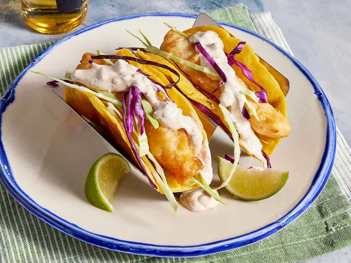

Odin Recipes | Previous Recipe | Next Recipe
Fish Taco Recipe

Lets Make Tacos!
You don’t have to leave your house to enjoy perfect fish tacos!
This beer-battered fish taco recipe, topped with a homemade white sauce and fresh cabbage,
will quickly become a mainstay in your rotation.
Ingredients:
- 1 cup all-purpose flour
- 2 tablespoons cornstarch
- 1 teaspoon baking powder
- 1/2 teaspoon salt
- 1 cup beer
- 1 egg
- 1/2 cup plain yogurt
- 1/2 cup mayonnaise
- 1 lime, juiced
- 1 jalapeno pepper, minced
- 1 teaspoon minced capers
- 1 teaspoon cayenne pepper
- 1/2 teaspoon dried oregano
- 1/2 teaspoon ground cumin
- 1/2 teaspoon dried dill weed
- 1 quart oil for frying
- 1 pound cod fillets, cut into 2 to 3 ounce portions
- 2 tablespoons all-purpose flour or more as needed
- 1 (12 ounce) package corn tortillas
- 1/2 medium head cabbage, finely shredded
Steps:
- Make beer batter: Combine flour, cornstarch, baking powder, and salt in a large bowl.
Blend beer and egg in a separate bowl, then quickly stir into flour mixture until combined with a few lumps remaining.
- Make white sauce: Mix together yogurt and mayonnaise in a medium bowl. Gradually stir in fresh lime juice until consistency is slightly runny.
Season with jalapeño, capers, cayenne, oregano, cumin, and dill.
- Start fish tacos: Heat oil in a deep-fryer to 375 degrees F (190 degrees C).
- Dust fish pieces lightly with flour. Set aside.
- Dip floured fish pieces into beer batter. Set aside.
- Fry in hot oil until crisp and golden brown. Drain on paper towels.
Lightly fry tortillas in hot oil until just crisped, but not too crisp. Drain on paper towels.
- Place fried fish in tortillas; top with shredded cabbage and white sauce.